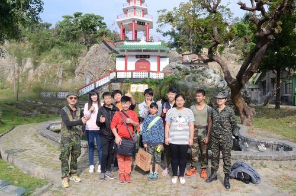
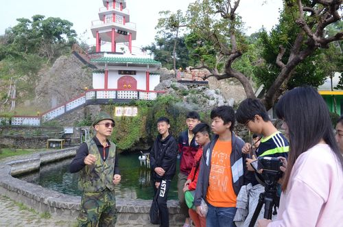

【靈泉池】 |
|
|  靈泉池實景拍攝 |
 感謝李顧問精采說明靈泉池典故 |
林園這邊有一個很奇特的早期民間文學林半仙的故事，其中靈泉池是林半仙在清水巖畔為農民求水灌溉農天的遺跡之一，林半仙求水之後那這個水裡總共在林園這邊流過七個窟，或者說是沼澤、湖泊，窟是比較小的湖泊，水從靈泉池湧出，先流到先鋒湖，沿著這邊左轉流到林園高中操場後面的大湖窟，往南流就是過溝窟，林園國小的正對面，現在都變成房子了；再往南流，我們叫韭菜園窟，之後再往南流經過現在的沿海公路台17線，就到了中芸國小操場的北側，最後繼續往南流到了海邊。
以靈泉池整個在南高雄的地區，它算是第二個景點，或者說第三個景點，起源就是早期林半仙會過來是因為，之前有大陸漁民在抓捕烏魚，那跟著抓烏魚群然後過來台灣，那當初他們那些漁民就在那個鳳鼻頭海邊，其中有一位漁夫去世了，那他同伴就用魚簍把他裝起來放在鳳鼻頭，那個珊瑚礁石灰岩就放在岩洞裡面，他有一個後代子孫有一個做到總兵大人，做到總兵大人他們的後代子孫不希望祖先屍骨流落他方所以要來台灣撿骨，想把屍骨撿回去他們家鄉埋葬，請了3位風水地理師，另外一個版本請了10位，他們從大陸越過黑水溝(澎湖台灣海峽)過來看，看一看他們這個風水地理，林半仙他建議不要撿骨，如果撿骨回去就會破壞這個風水；另外兩位風水地理師他們看一看也許是功力比較不夠，或者他們要迎合總兵大人要把祖先的遺骸撿回去之心切，所以就把將遺骸挖掘要帶回去大陸，可是經過那個澎湖的黑水溝遇到風浪翻船了。 林半仙在之前就想說那你們回去我就不跟著回去了，這撿骨回去後風水就破壞掉了，所以他們回去後來真的遇到這個海浪，林半仙在當地就沒有事，就沿著這一座山往北走，這座山是東北西南走向，走到大草厝聚落，口渴了他想要跟別人要水喝，結果當地住戶覺得這是陌生人還有一個奇怪的腔調，所以就沒有接待他，林半先只好後來就繼續往北走，走到現在的鳳山水庫，早期這一座山中間在鳳山水庫那邊比較低窪的山谷，日據時代都有在種稻子，越過山谷後，那裡沒什麼住戶所以就繼續往南走走到以前叫金京潭，有一些農夫在中午休息吃稀飯，那農夫很好意問林半仙吃飽沒，以前的人比較懂得一些民間禮儀，林半仙說我很餓又很渴，吃了番薯飯，他就很高興，就很感激啦，就跟農夫說，你們有什麼需要幫忙可以跟他講，這些農夫當然說，我們是靠天吃飯，種菜、種稻子，都需要水灌溉。 林半仙就觀察這座山，是有水源的，有水脈，他說好那就某一天，選好日子我會跟你們講，你們就準備ㄧ些供桌，所謂供桌就是ㄧ些拜拜要用的ㄧ些桌子.牲禮。 不過他講了一個條件，就是農夫要身穿蓑衣、腳穿草鞋、頭戴斗笠、手拿鋤頭，(蓑衣是自己編織草鞋)，而且施作法術當中一個很重要的項目，林半仙跟農夫說，劍插下去之後，我說我問你們「有沒有水？」，你們要說有，那位身穿蓑衣的老農夫要往東跑，不能停。第一次，求水的時候，林半仙劍插下去，結果問，啊有沒有水，民眾竟然講說，有啦，但是水很小，哇!就失敗了，相傳這個位置就是在現在清水寺的正後面，那第一個景點，林半仙就講說你們要說有，很大， 要快點跑啊，結果就失敗了嘛。所以林半仙指好再挑選好日子再施作法術，這次求水的時候，林半仙把劍插下去，問老農夫有沒有水，老農夫回答「有喔，很大喔」，並很快往東跑，但老農夫穿著草鞋要跑類似夾腳拖，很難跑，又身穿簑衣，鋤頭很重，很不好跑，老農夫心裡面就在想是不是林半仙在捉弄他，因為他說不能回頭看，不能回頭看，就一直跑一直跑，這個念頭一動，那個水就流到腳邊就停了，相傳那時候的位置就到現在的台25線鳳林路，水就止流到那邊，因此灌溉農田範圍就只有在鳳林路以西。 |
|
【靈泉池】-網頁製作心得 |
3年2班張簡澤承 |
|
我覺得靈泉池是一個非常神奇的地方，他的水不是像一般的水池一樣用引的，靈泉池的水竟然是用劍插出來的，真是太神奇了，雖然這些儀式中有許多的挫折與困難，例如:村民在林半仙把劍插進去時，嫌水太小.跑步跑到一半就停、之後對林不尊敬……等，不過經過眾人與林半仙的合作與努力之下完成了這一項大工程，也讓林半仙在歷史上留下一些名聲，也讓我更加佩服林半仙，更想了解與他相關的歷史故事以及文化傳奇。 |
|